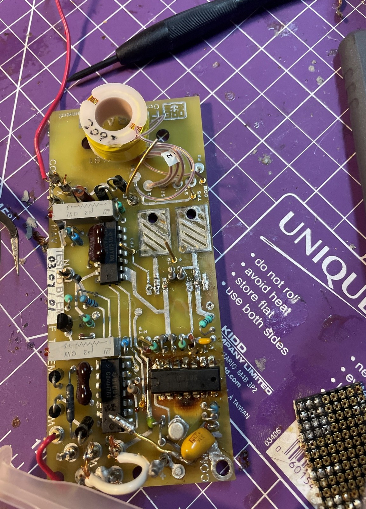
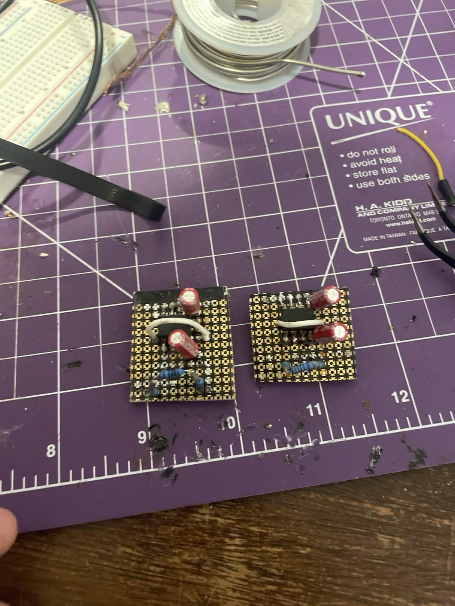
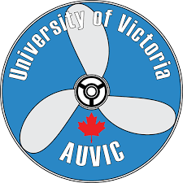
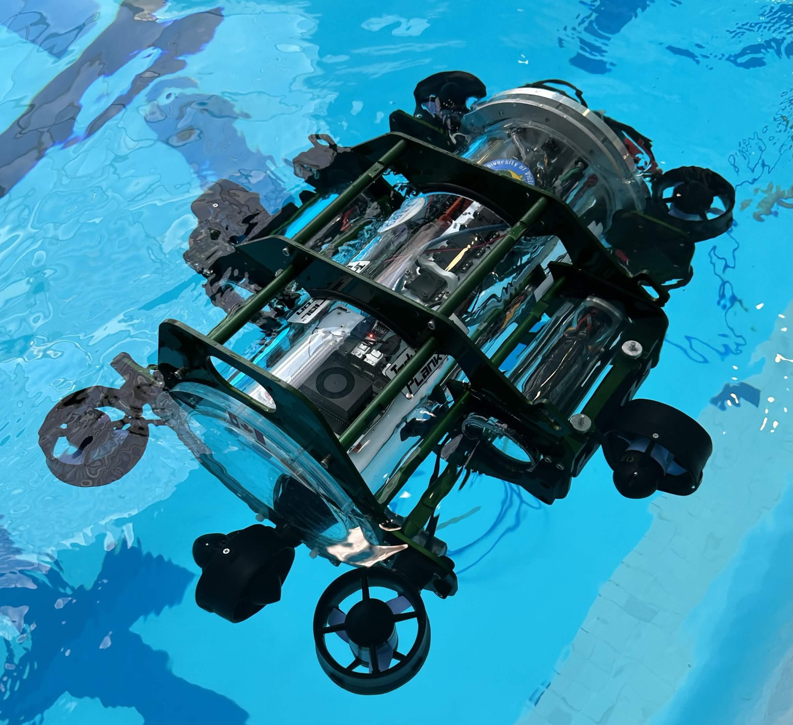
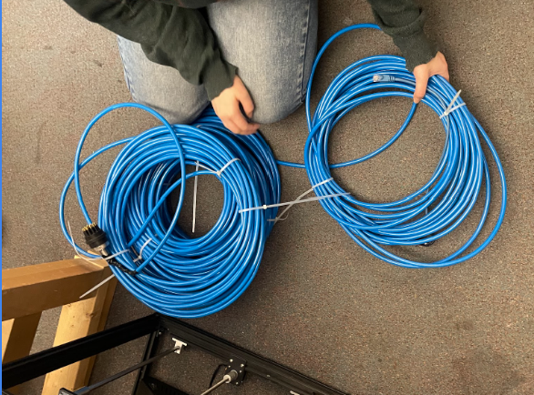
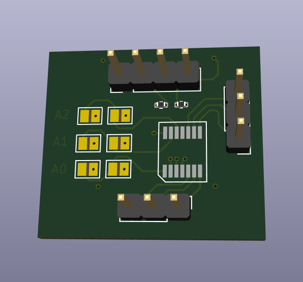
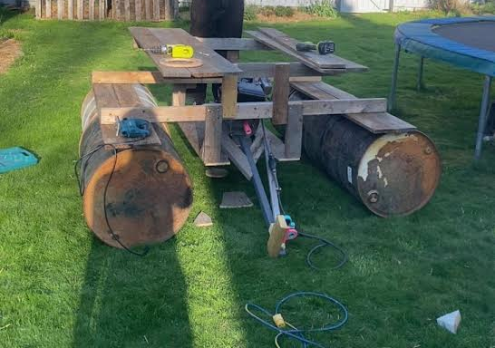

Electrical Engineering Undergraduate Portfolio

Assisted in conducting tests investigating how freeze-thaw cycling affects the structural integrity of aggregate and subgrade soils.
View Project
Designed, prototyped, and manufactured a CAN bus transceiver PCB
for use in the
AUVIC
 

Assembled and tested an Ethernet tether communication system for reliable data transfer between the AUV and surface systems.
View Project
Designed and manufactured an I2C-controlled digital potentiometer PCB for adjustable electronic control systems.
View Project
Designed and built a floating motorized picnic table that is currently in its second design iteration.
View Project